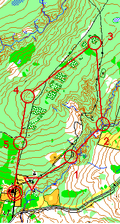
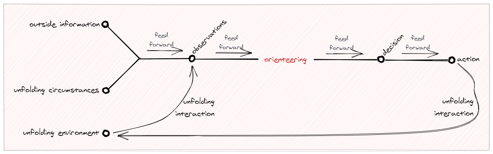
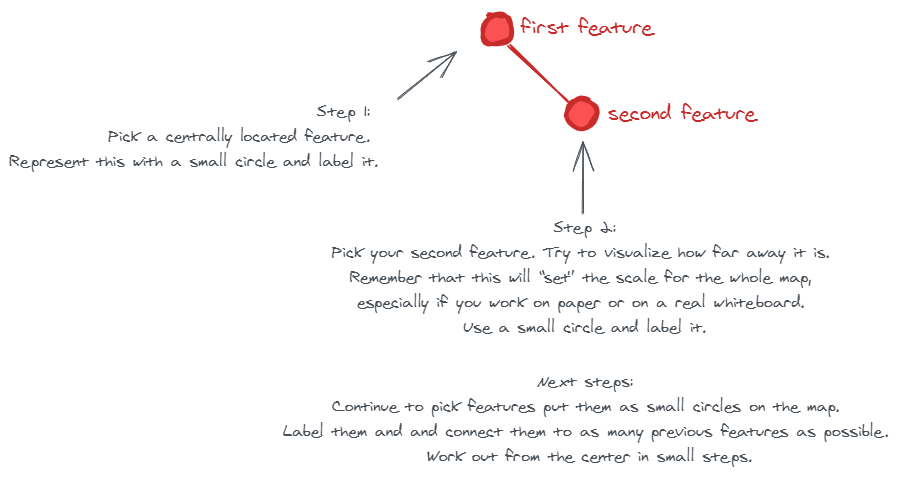

John R. Boyd's OODA ideas
For this post I use A Discourse on Winning and Losing as reference for John Boyd's OODA ideas. The document contains an Appendix which describes the OODA loop. I made this simplified sketched map of that loop:

For this post I use A Discourse on Winning and Losing as reference for John Boyd's OODA ideas. The document contains an Appendix which describes the OODA loop. I made this simplified sketched map of that loop:
For this post I use info and books available on the Ontario Orienteering website. Orienteering originated in Sweden in the late 19th century with the military. The term "orienteering" meant the crossing of unknown land with a map and compass. It’s a workout for both body and brain combining an outdoor physical adventure with map reading and navigational skills. The skill in orienteering is in choosing the best route between controls through geographical features, as you progress you will learn to decide between options. Here uou see an example of an orienteering map, withe the route and the controls plotted on a geographic map:

My first idea was to replace the orientation part of the OODA loop with orienteering. But when I read more about orienteering I realized that orienteering covers thw whole OODA loop. To show that I've replaced Boyd's orientation with orienteering and added the hatched box to indicate that orienteering not only replaces orientation but that it also overlaps (has similarities) with all other parts of the original OODA loop!

Agile in this context relates to to create maps that will help people not getting lost in this faster and faster changing agile world where people value "Individuals and interactions over processes and tools", "Working software over comprehensive documentation" and "Responding to change over following a plan". In other words:
All maps in this post are made with excalidraw, a very simple to use digital whiteboard program.
We use maps not only as a representation for geographical features like mountains, roads and cities but also for abstract features like concepts and ideas. Maps are small, they show only a few of the multitude of all features. When we sketch maps, we strip away all uneccesary details because a map user doesn't have much time to puzzle things out. And sometimes we also map the dragons to indicate possible dangers (“We don’t know what’s here!” and the dangers of ignorance) like the old mapmakers did. A map with few well chosen features will give a much better map than a map cluttered with many insignificant features, only simplicity provides a lasting impression.
In the rest of my post I will refer to my digital whiteboard pictures as maps, although some people might say that they are diagrams or just sketches. The reason for this that these are made by using the principles from mapmakers like Denis Wood and Harry Beck. Every map has a skeleton. This skeleton becomes visible when you show only the connected features and lines. No matter how many different types of information you want to overlay on the skeleton, the skeleton will always be there for reference. These are the steps for making a map skeleton:

Such a skeleton can become very messy (like a bowl of spaghetti), but luckily we can solve it by applying Harry Beck's map making principles.
Harry Beck designed one of the most famous maps, the iconic map of London’s Underground subway system. 

Another way to keep maps simple is to use a small set of visual elements which everybody can understand. I use these: